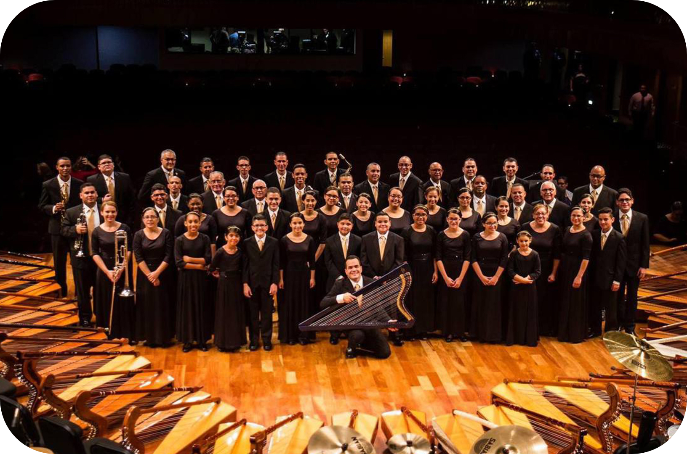
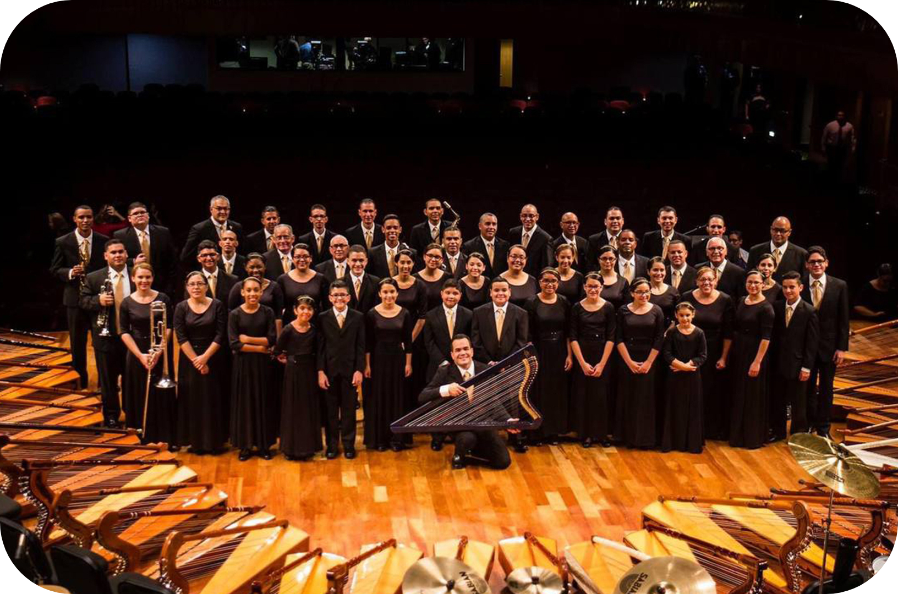

Dios levanta esta Obra
En 1940 inicia esta Santa Obra, en el pueblo de Arecibo, Puerto Rico. Fueron 11 los hermanos que,
junto a Juanita García Peraza inician este pueblo. Estos hermanos fueron los siguientes:
Teófilo Vargas Seín, Pedro Vargas, Concepción Seín, Luis Barrios, Octavio Velásquez, Blasina Barreto, Juan
Catalán, Tomasa Catalán, Justa Corchado, Juana Allende y Pepe Pastoriza.
La Congregación se translada a Hato Rey
En el 1947 el Espíritu Santo le indica a la Persona de Mita que la sede de esta Obra se
establezca en Hato Rey, San Juan, Puerto Rico. Hasta ese momento la sede de la congregación había
estado en el pueblo de Arecibo donde había tenido sus inicios.
Fallece la persona de Mita e inicia el Ministerio de Aarón
En 1970 tiene su deceso la Persona de Mita, pero antes de partir, el Espíritu Santo por sus
labios le dijo a Aarón: ‘‘Cuida de mi Pueblo que yo te pagaré’’. Es así como Aarón toma las riendas
del pueblo.
Inicia pues con Aarón una gran expansión e internacionalización de la Obra por América y Europa.
Se inaugura el gran templo sede de la Congregacion Mita
En 1990 se inaugura el Gran Templo de la Congregación Mita en Hato Rey, Puerto Rico con
capacidad para 6,500 personas sentadas y 10,000 en todos sus espacios disponibles.
Inicia el Ministerio de Rosinín
En el 2012 el Espíritu Santo a través de la boca de Aarón nombra a Rosinín como Madre Espiritual de
este Gran Pueblo.
Rosinín acompañó a Aarón desde 1970 en toda la gran obra de expansión que se estaba
realizando.


 
